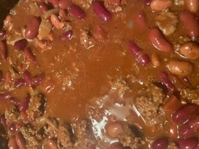

Chili

Family Chili Recipe
This recipe is my favorite chili from childhood. It is quick and
easy and will keep you warm on a cold night. It's fantastic when paired
with a couple of slices of fresh bread
Ingredients
- 1 Lb Ground Beef
- 1 Medium Onion
- 1 Can Tomato Soup
- 3 Cans Light or Dark Red Kidney Beans or Chili Beans (or one of each)
- 1 Small Can of Crushed Tomatos
- 2 Tsp Chili Powder
- 1 Tsp White Vinegar
- 1/4 Tsp Cumin
- 1/2 Tsp Salt
- 1/2 Tsp Ground Red Pepper (add more red pepper for a hotter chili)
Steps
- In a large casserole pan (5 Qt) add ground
beef and chopped onion
- Heat on medium high heat until ground beef
is fully cooked
- Break up ground beef into smaller 1/2 inch pieces
- Drain grease from cooked onions and ground beef
- Add all remaining ingredients to pan and
increase heat until contents boil, stirring
occasionally
- Reduce heat and simmer for 20 minutes